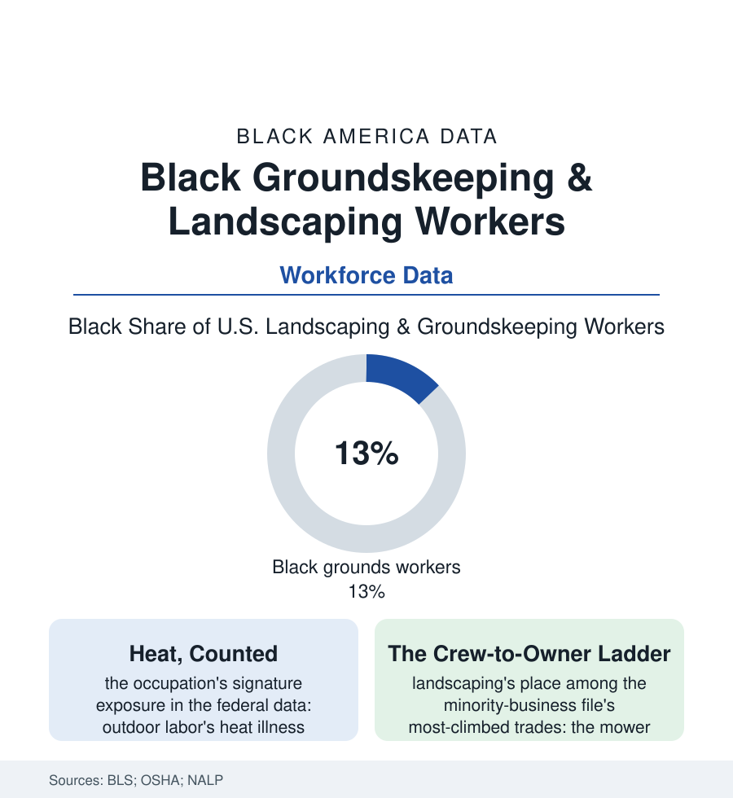

Black Employment
The Grounds: Black Landscaping and Groundskeeping Workers
The people who keep America's lawns, campuses, cemeteries, and courses employ Black workers in the hundreds of thousands — outdoors, exposed, and increasingly organized into ownership. The grounds file.

America's green surface — its lawns, campuses, cemeteries, medians, and championship fairways — is maintained by a workforce of well over a million, and Black workers are several hundred thousand of it: mowing, edging, planting, pruning, and keeping the grounds of every institution in this atlas. The work is outdoors, exposed, seasonally precarious, and — in the business data — one of the classic first ladders into ownership. This article reads the grounds file.
The Work and Its Weather
The occupation's data profile is written in exposures: the heat file first (groundskeeping standing in the occupational fatality census's front rank for heat deaths, the summer shift's dangers formalized in the recent federal heat-standard proceedings — the crew on the August median the rulemaking's Exhibit A), the chemical file beside it (the pesticide and herbicide exposures of the applicator's license, the training and language gaps of the safety data), the machinery's toll (the mower and chainsaw rows of the injury tables, the industry's small-engine republic running on the small-repair economy of the auto file), and the ergonomic grind the health section knows well (the back and shoulder claims of a stooping, lifting trade). The employment structure mirrors the building trades' two tiers without their ladder's formality: the institutional groundskeepers (the universities', hospitals', and municipalities' staff crews — unionized in the public file's pattern, pensioned, the work's stable tier, Black superintendents of grounds running some of the nation's most photographed landscapes from the crew side of the fence) against the contract and residential market's churn (the crew member's wage near the service floor, the season's end as the layoff's calendar, the winter's snow work and the South's year-round season splitting the occupation's geography — the migration file's descendants mowing both the Atlanta suburbs their grandparents were kept from buying into and the Florida corridors of the retirement economy, the irony filed without emphasis because the workforce files it that way themselves).
The labor market around the crew has tightened into the file's current argument: the industry's chronic shortage in the trade data (the unfilled-crew rates the associations survey each spring), the seasonal guest-worker program's cap battles setting the documented workforce's terms at the industry's big end, and the wage line finally moving under the pressure — the BLS series showing grounds wages outpacing the service average in the recent years, the crew leader's premium becoming the retention instrument the turnover data demanded. The golf tier keeps the file's most symbolic numbers: the head superintendents of the championship courses remain a nearly all-white guild in the association counts, its Black members organized in their own professional networks — the men who keep the greens of a game whose country-club file needs no retelling here, pursuing the credential (the turfgrass degree, the certification ladder) that converts the crew's knowledge into the industry's title.
The Ladder Out of the Crew
The grounds are the business section's favorite first chapter for a reason the capital data explain: the trade's ownership ladder has the lowest first rung in the contracting world (a mower, a trimmer, a truck — the route built lawn by lawn out of the employer's own neighborhoods, the crew leader's client knowledge converting directly into the new firm's book), and the landscaping shelf of the business census shows the pattern at scale — Black-owned firms thick in the residential market, professionalizing into the commercial tiers (the HOA and municipal contracts, the sports-field and campus accounts where the contract file's bonding and certification gates reappear in green), the industry's associations and supplier programs building the ladder's upper rungs in the recent years' data. The grounds' cultural file is older than the industry: the enslaved gardeners of the plantation records (Monticello's and Mount Vernon's garden staffs in the historic-site data — the landscape itself an authored Black work the attribution file is still correcting), the Pullman-era and park-era groundsmen, the cemetery keepers of the burial file's grounds — a lineage of Black hands authoring the nation's green rooms across four centuries, most of it unsigned. The modern superintendent's signature — the course, the campus quad, the ballpark's outfield pattern cut by the Black head groundskeepers of the professional stadiums — is the file's quiet correction in progress, one immaculate surface at a time.
Reading the Groundskeeping Data
The grounds file is the employment section's landscape in both senses: essential, everywhere, and trained by its viewers into invisibility — the finished lawn reads as nature, the crew that made it as scenery. The BLS counts the crew anyway: several hundred thousand strong, under the sun the heat file is learning to price, climbing the ownership ladder the business census can see. What America looks like, at ground level, is substantially their work.
More in Black Employment
The Black Unemployment Rate: The Two-to-One Pattern
Black unemployment runs at roughly twice the White rate — 5.5 percent against 3.3 percent in annual averages — a ratio stable across five decades of federal data. How it is measured and why it persists.
Black Median Weekly Earnings: The 80-Cent Ratio
Black full-time workers earn a median of about $900 a week — roughly 80 cents for every dollar White workers earn. The BLS earnings data by group, gender, and occupation.
Black Labor Force Participation: Working at National Rates
Black labor force participation runs at roughly the national rate — and Black women participate at higher rates than White women. The BLS participation data.
Source: U.S. Bureau of Labor Statistics occupational data; U.S. Census Bureau; Occupational Safety and Health Administration; National Association of Landscape Professionals.